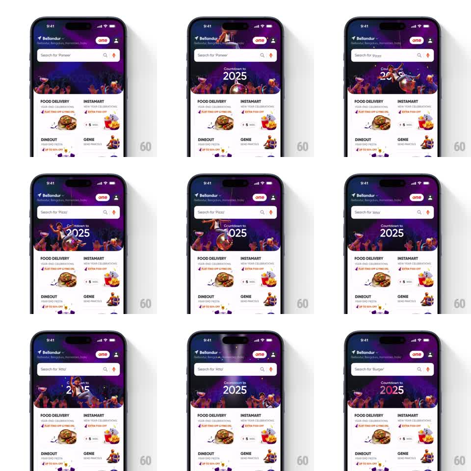

Media
Frame-by-frame

Rebuild this animation 1:1: Swiggy's New Year home screen - a festive countdown banner animates behind the header while the search bar's placeholder cycles through food suggestions with a slide transition.

Rebuild this animation 1:1: Swiggy's New Year home screen - a festive countdown banner animates behind the header while the search bar's placeholder cycles through food suggestions with a slide transition.
## Integration
Integration: stack-agnostic spec - springs given as stiffness/damping, timed motions as duration + curve; map every value to your framework and animation library of choice.
## Scene
Swiggy home: location header, search bar with a "Search for '<dish>'" placeholder, a purple party banner below with a crowd illustration and "Countdown to 2025" typography, then the service grid (Food Delivery, Instamart, Dineout, Genie) with promo chips.
## Motion spec
Pattern: ambient banner loop with rotating placeholder, continuous.
- The banner art animates on loop: confetti drifts down (3s cycle, staggered), the crowd's raised glasses bob (1.2s alternate), and the "2025" digits do a slow shimmer sweep (2.5s, light gradient passing left to right).
- Every ~2.5s the search placeholder slides the current dish word up and out (250ms, ease-in) while the next word slides in from below (250ms, ease-out), passing through the same slot without overlap.
- The placeholder's surrounding text ("Search for", the quotes) stays fixed; only the dish word moves.
- Scrolling the page keeps the banner's loop running; nothing restarts.
## Calibration
- The placeholder swap is a vertical slot-machine slide, not a crossfade - the two words never occupy the slot together.
- All banner loops are slow and low-amplitude; this is decoration behind a functional screen.
## Reduced motion
Banner static; placeholder crossfades.
## Don't miss
- The promo chips under the service icons also shimmer in sync with the banner's sweep - the whole header zone breathes together.
- The mic icon at the search bar's right pulses faintly on the same cycle as the placeholder swap.